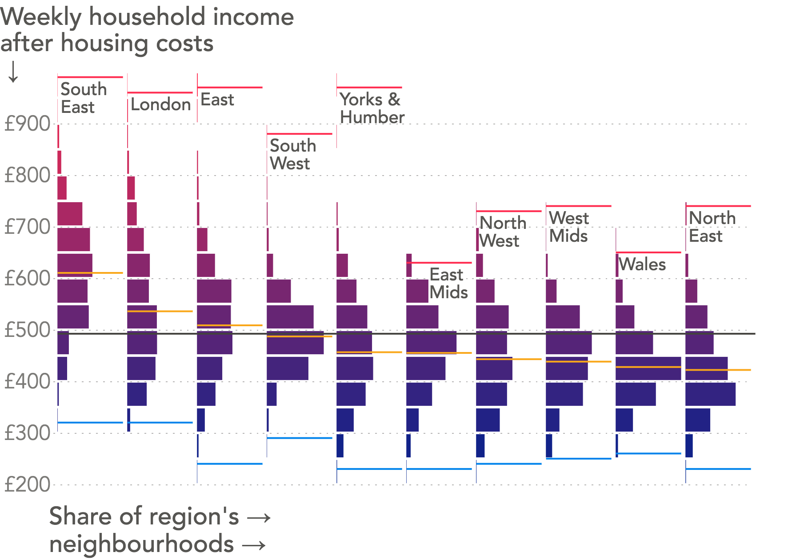

Using data to bridge
the gap in a divided society
Data-haters have a point
It's increasingly difficult to deny that the [mis]use of statistics has contributed to the divide in many modern, developed societies
Summary statistics rarely describe somebody's lived experience and never ring true for the whole population
When a summary statistic does not apply to you...
At best, it feels irrelevant
At worst, it actively reminds you that you're on the "losing" side of society
In their worst, most top-down form, statistics are un-democratic. They are a pronouncement from on high that the people should act and feel in accordance with an intangible number, even if that number and its implications are a world away from what they experience every day
So how can data and statistics not only find their feet again, but play a key role in bridging the gap they have helped create?
Anscombe's quartet

Anscombe's quartet is not just an nerd's party trick, it highlights a very real problem
Income levels in the UK
In April 2016, median gross weekly earnings for full-time employees were £539
In April 2016, median gross weekly earnings for full-time employees were £539
We can do better than that, and it's important that we do better than that

Disposable income

Taking account of housing costs

Do you earn the same amount as your neighbour?
How about someone across town?
Break it down by region

<< enhance >>
7,000 Medium Super Output Areas
Guidelines for using statistics to serve society
Show the full distribution wherever possible
• Demonstrates the full range of circumstances experienced by different people, which...
1. Ensures that the people represented by that data feel truly represented
2. Often highlights the real story that was obscured by the summary statistics
3. Confronts the importance of relative standing

Any questions?
You can reach me on Twitter @jburnmurdoch or by email at john.burn-murdoch@ft.com
These slides are at bit.ly/data-divide